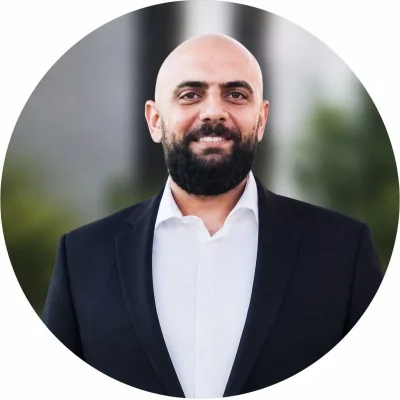

IT Management
Operational ownership, planning, prioritization, policy development, vendor coordination and ongoing technology oversight.
About
I combine hands-on technical depth with long-term IT management experience to help businesses make better technology decisions and maintain reliable day-to-day operations.

Background
I have worked across infrastructure, systems administration, networking, Microsoft environments, cybersecurity, backup, business continuity, technical support, vendor management and technology projects.
Since 2012, I have held IT management leadership responsibilities across Nakhal & Cie and Wings of Lebanon, alongside project-based consulting work with LINC Consulting and earlier outsourced enterprise support and technical engineering roles.
My approach is practical: understand the business need first, identify the real operational or security risk, and then recommend technology that is appropriate for the organization’s size, budget and priorities.
Core Expertise
Operational ownership, planning, prioritization, policy development, vendor coordination and ongoing technology oversight.
Administration, email, licensing, user access, collaboration and practical security controls.
Servers, virtualization, networks, Wi-Fi, firewalls, modernization planning and troubleshooting.
Access controls, firewall management, endpoint security, monitoring and practical risk reduction.
Backup, recovery, redundancy, disaster recovery and availability of business-critical systems.
Requirements, evaluation, procurement, implementation coordination, testing and follow-up.
Representative Responsibilities
Much of my experience comes from ongoing responsibility for systems that businesses depend on every day, not only isolated technology projects.
Responsibility for server, network and business-system availability, maintenance planning, backup, recovery and continuity.
Security policies, access rules, filtering, infrastructure improvements and coordination with external providers.
Administration, identity and access, licensing, Exchange and Outlook requirements, and evaluation of workflow and integration needs.
Requirements clarification, technology evaluation, supplier coordination, implementation follow-up, testing and handover.
Working Style
I prefer clear ownership, documented decisions and measurable follow-up. I work directly with business owners, managers, internal teams and technology providers to keep projects and day-to-day IT aligned with operational priorities.
Technology should reduce friction and risk — not create another layer of complexity for the business.
Professional Credentials
My current professional history is available on LinkedIn. Earlier technical certifications include CCNA, CompTIA A+, CompTIA Network+, MCITP and CEH v9. I present them as background credentials rather than the main basis of my consulting work.
Consulting Resources
The capability statement summarizes my consulting focus and ways to engage. The sample IT assessment is a fictional, illustrative deliverable that shows how findings, risks and priorities can be presented to management.
A concise overview of consulting focus, services and engagement options.
Download Capability Statement (PDF, 107 KB)A fictional example showing how findings, risks and priorities can be structured for management.
View Sample IT Assessment (opens in new tab)Independent Consulting
I can lead a specific project or assessment, provide ongoing IT management, or work as a fractional IT Manager alongside management, internal IT and external vendors.
Contact Me